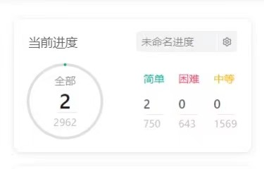

编程实践与小班讨论
编程实践：Leetcode截屏考核说明
|

|
- 每周五8:00到24:00，将自己Leetcode截屏发给我学生邮箱18711230730@163.com，邮件标题格式为“Leetcode截屏-[姓名]-[学号]-[日期]”；
- 每周要求至少做3道题目，题目范围参照课程进度；
- 一个难度简单的题，计2分；一个难度中等的题，计3分；一个难度困难的题，计4分。单次分数上限10分。
|
小班讨论
小班讨论总分为100分，其中算法分析演讲60分，提交算法分析报告40分。每班分6组，5~6人一组。
需要完成的任务要求如下：
每组需要运行代码，制作PPT讲解代码，分析每个程序的时间复杂度，程序的瓶颈及改进方式，每一组至少要安排2个不同的两个人进行讲解。
1、演讲分数（60分）
（1）代码运行及解读完整度（15分）：运行成功得5分，讲解出现一个错误扣1分。
（2）时间复杂度分析（15分）。有进行时间复杂度分析就给分。
（3）程序瓶颈分析及程序改进方法的效果（10分）。瓶颈分析正确得5分，提出有效的改进方法得5分。
（4）PPT制作水平（10分）：版面设计和谐美观，布局合理，导航清晰简洁，幻灯片之间有层次性和连贯性，逻辑顺畅，过渡恰当：3分；文字清晰，字体设计恰当、色彩搭配配合合理协调，风格统一，视觉效果好，符合视觉心理：3分；合理使用PPT动画等新功能：2分；具有鲜明个性，创意新颖：2分
（5）演讲水平10分。要求衣着整洁，仪态大方、举止自然得体，体现朝气蓬勃的精神面貌，上下场致意：2分；要求脱稿演讲，声音洪亮，口齿清晰，普通话标准，语速适当、表达流畅，讲究演讲技巧，动作恰当：5分；综合印象：由评委根据演讲选手的临场表现及现场感染力作出综合评价：3分
2、提交算法分析报告（40分）
算法分析完整性（10） 报告完整性（10） 文档规范（10） 实验结果（10）
报告完整性包括算法分析，算法实现，时间复杂度分析，心得等等。